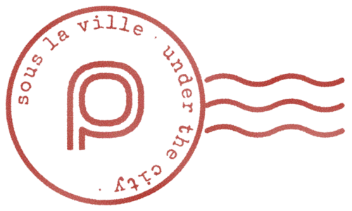

Privacy policy
pneu keeps your mail on your own computer. Nobody else, including pneu's author, receives any of it.
Who operates the app
pneu is software you install and run yourself. Each installation uses a Google OAuth client created by the person installing it, in their own Google Cloud project. There is no pneu server, account or service, and the author of pneu has no access to any installation or its data.
What it accesses
With your consent, pneu's sync component (lieer) uses the Gmail API with these scopes:
gmail.readonly, to download your messages;gmail.labels, to read and manage your labels;gmail.modify, to apply the changes you make, such as archiving, starring and marking read, and to send mail you write.
Where your data goes
- Messages are stored on your computer, in your home directory, and indexed there by notmuch.
- The OAuth token is stored on your computer, readable only by your user account.
- pneu's own server listens only on your computer's loopback interface and makes no connections to the internet. The only network traffic is between lieer and Google's Gmail API.
- Nothing is sent to pneu's author or to any third party. There is no analytics, telemetry, advertising or crash reporting.
Limited Use
pneu's use and transfer of information received from Google APIs adheres to the Google API Services User Data Policy, including the Limited Use requirements. Data from Gmail is used only to show you your own mail and carry out the actions you take, and is not transferred to anyone.
Removing access and data
Revoke access at any time in your Google account's third-party connections. Uninstalling pneu (the Uninstall section of its install guide) deletes the downloaded mail, the index and the token from your computer.
Changes
This policy changes only with pneu's source, and the current version is always at this address. Last updated 26 September 2026.